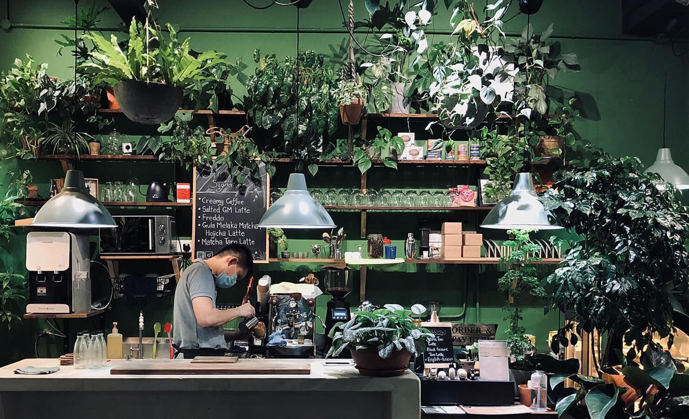

Lavender Cafe
Lavendar Cafe story
Our story began on a dreamy afternoon, in a square in a space, and Lavender Cafe was born. In 1998, we set up our first store in a quiet square in the city. At that time, our heart was simple: to create a space where people can slow down and enjoy a good time. The name of Lavender Cafe was inspired by lavender, the aroma that makes people feel panic and calm, and it is also the feeling we hope to continue for every patient. At first, we were just a limited buffer, providing selected coffee beans and desserts. But we always believe that simple, good coffee and a warm atmosphere can bring healing power to people. In 2005, with the love and support of customers, Lavender Cafe began to expand our menu, adding more exquisite light meals and handmade desserts. We also began to pay attention to the park in the store, incorporating the elements of lavender into it, creating a space full of romance and comfort. In 2012, Lavender Cafe began to cooperate with local artists, holding small exhibitions and music performances from time to time, making the cafe a communication place full of artistic atmosphere. We believe that coffee is not just a drink, but also a way of life, a concept that connects people's attitudes and emotions. Lavender Cafe has now become a unique landscape in the city. We always adhere to the original belief and hope that every customer who walks into the Lavender Cafe will share a piece of tranquility and beauty. We not only sell coffee, we sell a good time, a space for you to relax and recharge.

Lavender Café's origin is a story filled with dreams and warmth.
The story began in 1998, on a peaceful afternoon, in a corner of a city, where a dream was planted. The founder wanted to create a space for people to slow down and enjoy good times. So, the first Lavender Café was born in a quiet square.
Lavender's InspirationThe name "Lavender Café" was inspired by the aroma of lavender, a scent that makes people feel relaxed and serene. This is the feeling the founder wanted to convey to every customer. Initially, the café was just a small space, offering selected coffee beans and simple desserts.
2005: Growth and ExpansionWith the love and support of customers, Lavender Café began to expand its menu in 2005, adding more exquisite light meals and handmade desserts. At the same time, the café began to focus on creating an in-store environment, incorporating lavender elements to create a romantic and comfortable space.
2012: Art and Cultural ExchangeBy 2012, Lavender Café began to collaborate with local artists, holding occasional small exhibitions and music performances, making the café a place for artful exchange. The founder believes that coffee is not just a drink, but a way of life, a medium that connects people's emotions.
Lavender Café TodayToday, Lavender Café has become a unique landscape in the city. It has always adhered to its original belief, hoping that every customer who walks into Lavender Café can enjoy a moment of tranquility and beauty. The café not only sells coffee, but also sells a good time, a space for people to relax and recharge.
The Team Introduction
{kind=link}
Store Manager : SOON YONG TAT
Age:25
"Our store's success isn't just about the products we sell; it's about the connections we build.
Every customer who walks through our doors deserves an exceptional experience, and it's our team's
passion and dedication that make that happen. I believe in empowering my team, fostering a positive
environment, and working together to exceed expectations. Because at the end of the day, a happy
team creates happy customers, and that's what truly matters."
Deputy Store Manager : Leong Yung Kit
Age:24
"Our role isn't merely to assist, but to be the bridge between our team and customers.
We use meticulous care and passion to support the store manager in creating exceptional
service, ensuring every customer feels our dedication."
{kind=link}

Barista : Xander Lim
Age:23
"Each coffee bean is a gift from nature, and I use my professional
skills to perfectly present their flavors."